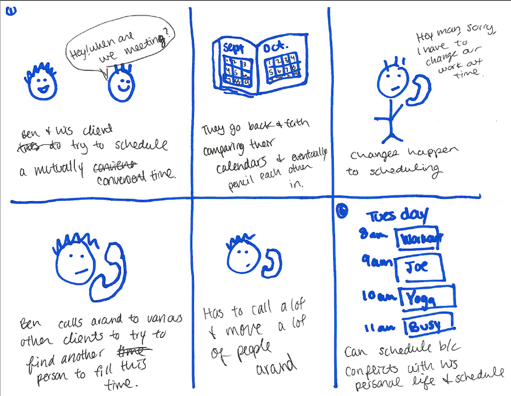
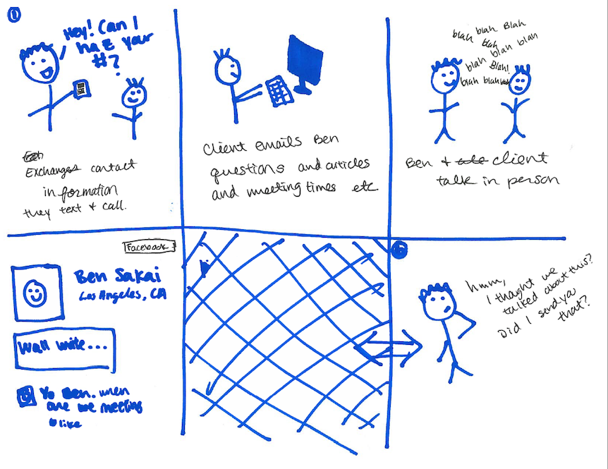
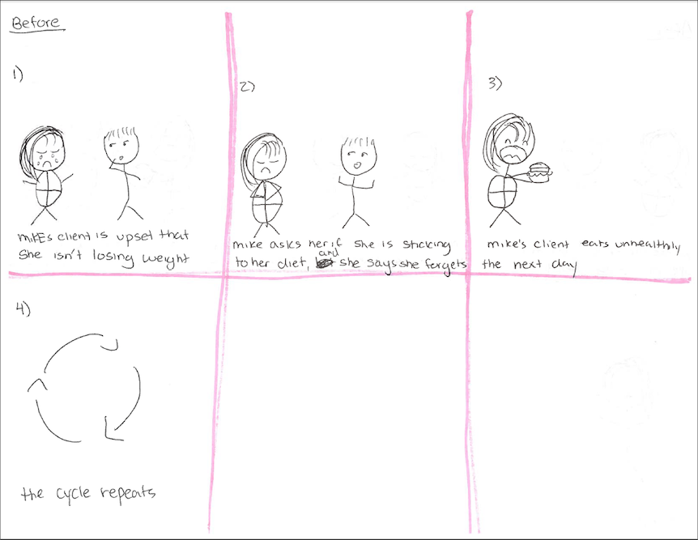
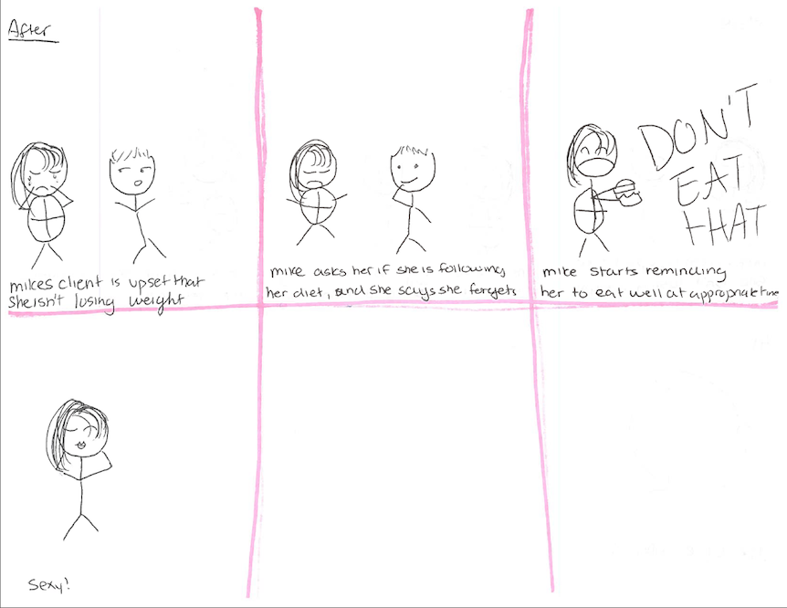
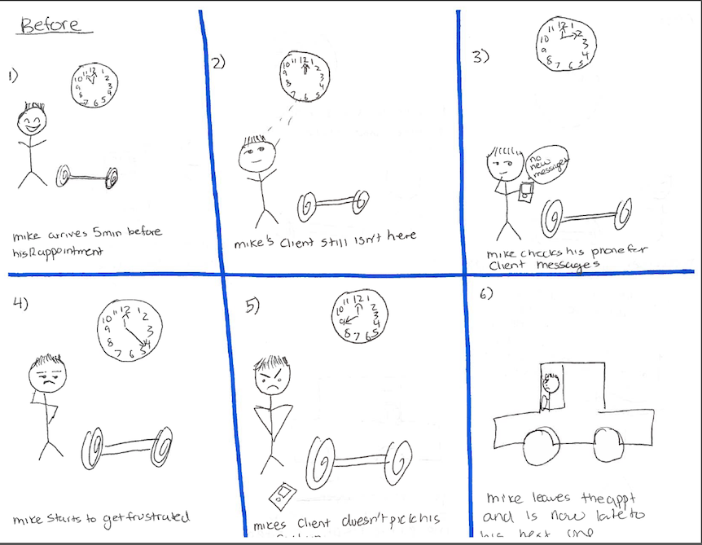
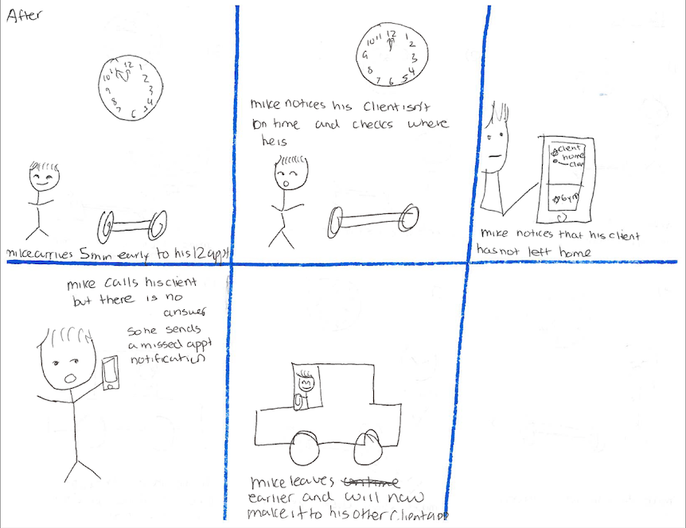
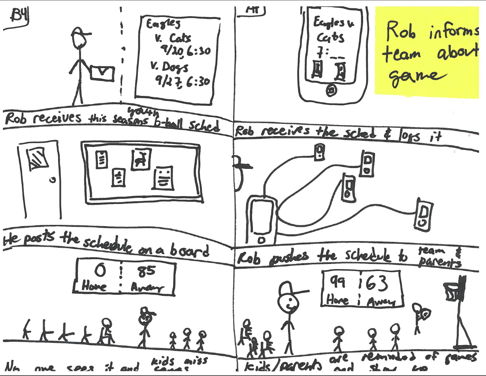
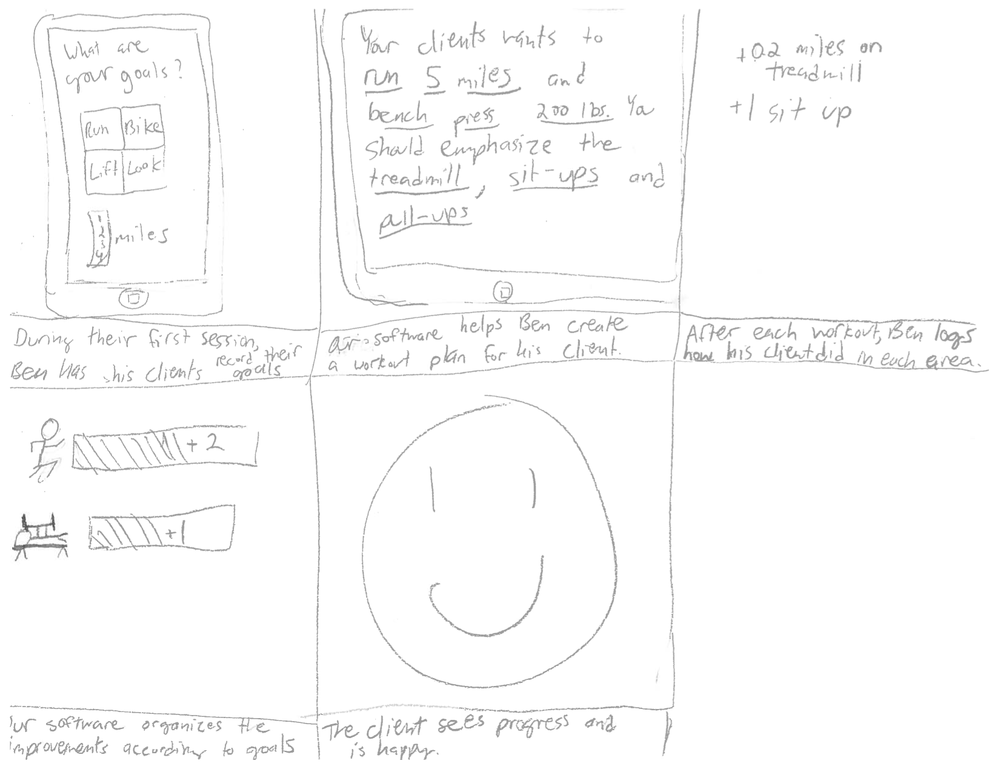
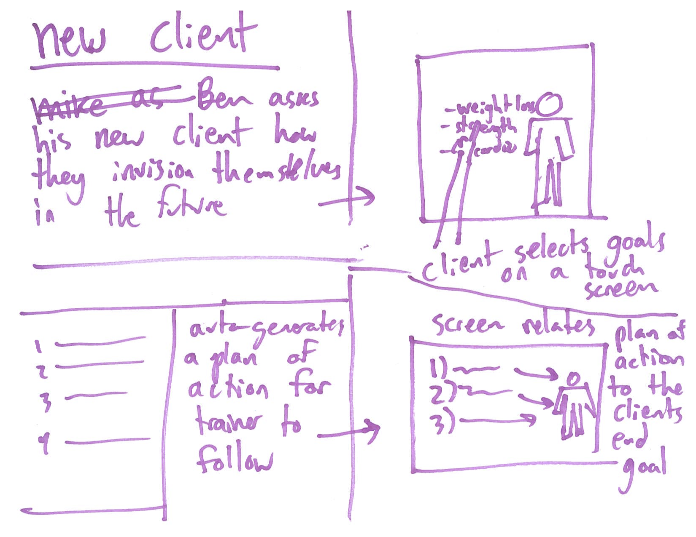
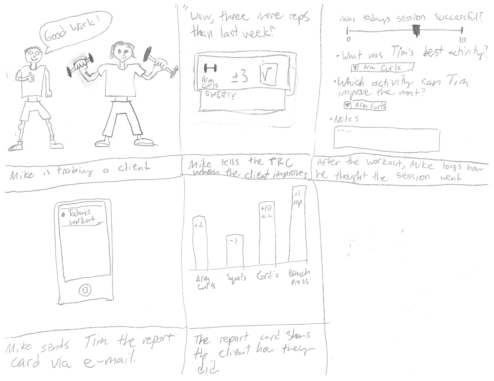

Needs Analysis
Overview
For our Human Factors and Interface Design project, Team Soul Patch is examining the ways that personal trainers log their clients’ workouts and keep focused on their clients’ goals. We originally concentrated on scheduling because trainers have very packed schedules and are short on time. Then, we figured that trainer’s real goals and values are to help clients improve. To alleviate time constraints, we wanted to make the workout logging process easier and quicker through a mobile interface. To emphasize client improvement, we made it simple for the trainer to be reminded of the the client’s goals and how the client has been progressing. To help them facilitate communication between the trainer and client, we allowed for easy sharing of the workouts and progress charts. Our interface would ideally help personal trainers have the easiest and quickest possible experience in keeping track of past workouts and client progress to motivate their clients in achieving their fitness goals.
To do a needs analysis, we first interviewed trainers
Member Services Guy
- Average health club members want personalized experiences
- Members have to stay motivated and they are confused about what they want and often have to have their goals deciphered.
- Members services and trainers help their clients define what “being fit” means to them individually and have to remind them
- Members can be broken down into the following categories: Deconditioned, Former Exerciser, Current Exerciser
Local Small Gym Owner
- Used both positive and negative feedback
- Very encouraging during workouts, pushy in between workouts
- Lots of branding
- displayed her schedule on a large monitor (time seemed important to her)
- was playing aggressive heavy metal through Pandora to set a fast pace for the session
Experienced Trainer that makes house calls
- Started training through his fascination with a human body
- Molded his schedule around his clients’ work schedules
- Tried to make exercising more important to his clients
- Clients often make appointments with him so that they can work out regularly, their only goal is consistency
- Used texts as written record of appointment schedules
- A lot of his on-boarding process with clients was figuring their goals out, and what they did or did not enjoy doing
- Body language played a big role for him in terms of getting feedback from the client
- Sometimes “tricks” clients (having them get in and out of a chair instead of doing a squat)
- Gets frustrated when people don’t follow what he says when they’re outside of training sessions
- Gives a lot of nutritional advice
- He knows what most of his clients do outside of the sessions, encourages them and makes their they stay on track
- Needs a personal assistant for his own life
- Feels a lot of pressure to stay fit
- Believes that trainers with integrity are those that are fit
We outlined four sets of primary characteristics
Reason for training
- Evangelical (wants everyone to be fit)
- Humanist (wants people to be happy)
- Opportunist (recognizes own training skill and uses training as a job)
Gym Affiliation
- Works at a gym
- Owns a gym
- Not affiliated with a gym
Education
- No health degree
- One health degree
- Multiple degrees and certifications
Encouragement
- Negative feedback
- Mixed feedback
- Positive feedback
We created three preliminary personas
From this matrix and our interview notes, three people emerged: Ben the Partner, Rob the Gym Sergeant, and Mike the Life Coach. As you can see in the pictures below, these personas were preliminary. Our process in creating these personas was highly organic, as we wanted to flesh out their personalities along with their training styles, and move from that to what kinds of tools these personas may need.
We created a list of common tasks for personal trainers
We then used this list and our personas to create a mapping between a persona and how important a task was to them (right scale) and how often they did this task (left scale).
Scenarios
We created six scenarios (either Before and Afters or illustrations of existing frustrations) that we would like to tackle with our project.


Ben experiences problems scheduling all of his clients at once while using only his phone.


Ben loses track of all the communications he’s had with a client and is not sure when the appointment is.

Before: Mike has trouble keeping his client on track when she's not eating right.

After: When Michael is given the tools to remind her at the right times, his client loses weight.

Before: Mike is frustrated when a client cancels on him, since punctuality is very important to Mike.

After: Once Mike is given the tools to see if his client is going to be late, Mike is less stressed out by lateness and missed appointments.

In this Before and After, Rob, the coach of a local youth basketball team, posts the game schedule for the season on a tack board and no one sees it. He becomes frustrated when no one shows up for the game. When he’s given the tools to blast the schedule out to all of his kids’ parents’ phones, however, everyone gets to the game, including the parents.
‹
›
We picked the areas of interest and reframed personas
We identified some of these tasks we found interesting to solve through software and we reframed our personas from the perspective of the kind of software we want to make. We used this re-framing to formally draft up our personas.
Areas of interest
- Setting client goals
- Communicating client's progress
Story Boards
Once we had more developed personas, we brainstormed myriad different solutions for the problems each persona had. Initially, these solutions were around scheduling and client communication, but we pivoted to focusing on communicating a client’s goals to the trainer and helping trainers communicate progress to their clients. Keeping these goals in mind, we created three storyboards. One shows a system that a trainer can use to help find out a client’s goals, another helps trainers how their clients how their workouts are relevant to their goals, and a third helps trainers input information about each client’s workouts and sends that information to clients in a way that’s easy to consume and understand. All three ideas try to empower the trainer to motivate their client through showing the client progress and relevance to goals.


Help the trainer communicate to the client how their workouts are relavent to their goals.


This piece of software is dedicated to helping trainers identify clients goals.

The trainer can easily log clients workouts, which helps the client see their goal progress.
‹
›
Work distribution
|
Cypress |
Noam |
Sharon |
Dana |
| User interviews |
23% |
31% |
23% |
23% |
| Task Analysis |
25% |
25% |
25% |
25% |
| Personas (v1) |
25% |
25% |
25% |
25% |
| Personas (v2) |
30% |
20% |
20% |
30% |
| Scenarios |
10% |
30% |
30% |
30% |
| Idea brainstorming |
25% |
25% |
25% |
25% |
| storyboards |
35% |
35% |
20% |
10% |
{kind=link}
{kind=link}
{kind=link}
{kind=link}
{kind=link}